Tatsunori Taniai, Ph.D.
谷合 竜典
I am a Senior Researcher in the Knowledge Computing Group at OMRON SINIC X Corporation, based in Tokyo, Japan. Through my research, I am pursuing a new methodology for the era of deep learning, which I call "Principled AI." My research interests span sensing, 3D vision, atomic system modeling, and autonomy——areas where physical, mechanical, or algorithmic principles play a fundamental role.
Topics: Sensing, 3D Vision, Physics-Informed ML, Autonomy.
Call for Interns: I am seeking an intern to work intensively with me on a geometry-related problem in 3D computer vision or physics-informed machine learning, with the goal of publishing a paper at CVPR, ICCV, ECCV, ICML, NeurIPS, or ICLR.
Email: tatsunori.taniai [at] sinicx.com
Research Projects
-
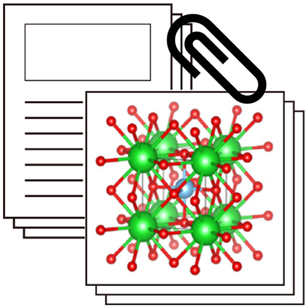
Bridging text and crystal structures: literature-driven contrastive learning for materials science
Machine Learning: Science and Technology 2025
Yuta Suzuki, Tatsunori Taniai, Ryo Igarashi, Kotaro Saito, Naoya Chiba, Yoshitaka Ushiku, Kanta Ono
-

Rethinking the role of frames for SE(3)-invariant crystal structure modeling
ICLR 2025
Yusei Ito*, Tatsunori Taniai*, Ryo Igarashi, Yoshitaka Ushiku, Kanta Ono
-

Crystalformer: Infinitely Connected Attention for Periodic Structure Encoding
ICLR 2024
Tatsunori Taniai, Ryo Igarashi, Yuta Suzuki, Naoya Chiba, Kotaro Saito, Yoshitaka Ushiku, Kanta Ono
-
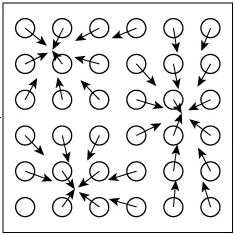
Neural structure fields with application to crystal structure autoencoders
Communication Materials 2023
Naoya Chiba, Yuta Suzuki, Tatsunori Taniai, Ryo Igarashi, Kotaro Saito, Yoshitaka Ushiku, Kanta Ono
Open Access / Project / Code
-
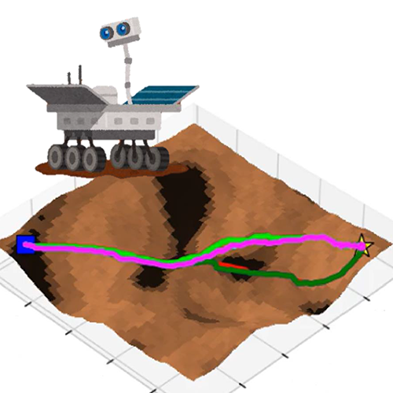
Risk-aware Path Planning via Probabilistic Fusion of Traversability Prediction for Planetary Rovers on Heterogeneous Terrains
ICRA 2023
Masafumi Endo, Tatsunori Taniai, Ryo Yonetani, Genya Ishigami
-
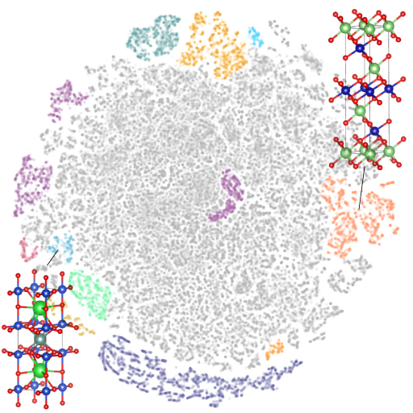
Self-supervised learning of materials concepts from crystal structures via deep neural networks
Machine Learning: Science and Technology 2022
Yuta Suzuki, Tatsunori Taniai, Kotaro Saito, Yoshitaka Ushiku, Kanta Ono
-
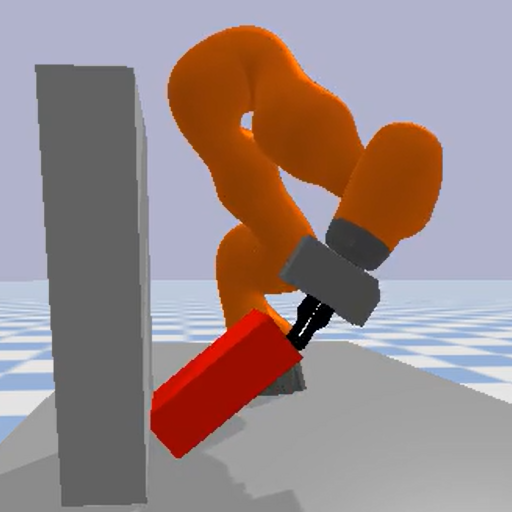
Quasistatic contact-rich manipulation via linear complementarity quadratic programming
IROS 2022
Sotaro Katayama, Tatsunori Taniai, Kazutoshi Tanaka
-
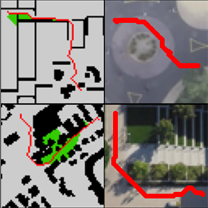
Path Planning using Neural A* Search
ICML 2021
Ryo Yonetani*, Tatsunori Taniai*, Mohammadamin Barekatain, Mai Nishimura, Asako Kanezaki
-
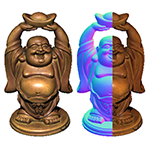
Neural Inverse Rendering for General Reflectance Photometric Stereo
ICML 2018
Tatsunori Taniai, Takanori Maehara
-
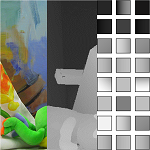
Continuous 3D Label Stereo Matching using Local Expansion Moves
TPAMI 2018
Tatsunori Taniai, Yasuyuki Matsushita, Yoichi Sato, Takeshi Naemura
-
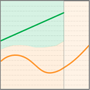
Semi-Global Stereo Matching with Surface Orientation Priors
3DV 2017 Spotlight
Daniel Scharstein, Tatsunori Taniai, Sudipta N. Sinha
-
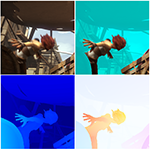
Fast Multi-frame Stereo Scene Flow with Motion Segmentation
CVPR 2017
Tatsunori Taniai, Sudipta N. Sinha, Yoichi Sato
Preprint / Preprint (extended) / Poster / Project / Demo
-
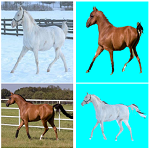
Joint Recovery of Dense Correspondence and Cosegmentation in Two Images
CVPR 2016
Tatsunori Taniai, Sudipta N. Sinha, Yoichi Sato
Preprint / Preprint (extended) / Poster / Project / Demo
- 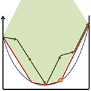
-
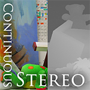
Graph Cut based Continuous Stereo Matching using Locally Shared Labels
CVPR 2014
Tatsunori Taniai, Yasuyuki Matsushita, Takeshi Naemura
-
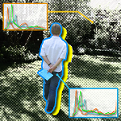
Image Segmentation using Dual Distribution Matching
BMVC 2012 Oral
Tatsunori Taniai, Viet-Quoc Pham, Keita Takahashi, Takeshi Naemura
Preprint / Supp / ExtAbst / Slides / VideoLecuture / Project
History
Education
- Ph.D. in Information Science and Technology, The University of Tokyo, 2017. Supervised by Prof. Yoichi Sato
- M.Sc. in Information Science and Technology, The University of Tokyo, 2014. Supervised by Prof. Takeshi Naemura
- B.Eng. in Information and Communication Engineering, The University of Tokyo, 2012. Supervised by Prof. Takeshi Naemura
Professional Career
- Senior Researcher at OMRON SINIC X Corporation, Tokyo, Japan, 2019 – Present
- Visiting Researcher at RIKEN AIP Center, Tokyo, Japan, 2019 – 2020
- Special Postdoctoral Researcher at RIKEN AIP Center, Tokyo, Japan, 2017 – 2019
- Research Assistant at RIKEN AIP Center, Tokyo, Japan, 2017
- JSPS Young Research Fellow at The University of Tokyo, Tokyo, Japan, 2014 – 2017
Internships
- Research Intern at Microsoft Research, Redmond, USA, May – Aug. 2016. Supervised by Dr. Sudipta Sinha. Published a CVPR 2017 paper.
- Visiting Researcher at Microsoft Research Asia, Beijing, China, Jan. – Apr. 2016. Supervised by Dr. David Wipf
- Research Intern at Microsoft Research, Redmond, USA, May – Aug. 2016. Supervised by Dr. Sudipta Sinha. Published a CVPR 2016 paper.
- Research Intern at Microsoft Research Asia, Beijing, China, Dec 2012 – Apr. 2013. Supervised by Dr. Yasuyuki Matsushita. Published a CVPR 2014 paper.
Service
- Conference Reviewer: CVPR '25 – '22, '20, '18, ICCV '23, '19, '17, ECCV '20, 3DV '18, '14
- Journal Reviewer: TPAMI '23, '19, '18, IJCV '18, CVIU '17, IMAVIS '16, IEEE TIP '18, '15.
- SSII 2025, An Organizer of Tutorial and Technical Talk Sessions.
Awards and Honors
- Outstanding Reviewer Recognitions from CVPR 2023 , ECCV 2020 , CVPR 2020 , CVPR 2018.
- IPSJ Yamashita SIG Research Award (山下記念研究賞) from Information Processing Society of Japan, 2018 [Link]
- Dean's Award for Best Doctoral Thesis from Graduate School of Information Science and Technology, The University of Tokyo, 2017
- Microsoft Research Asia Fellowship 2015 from Microsoft Research Asia for thirteen PhD students from Asia majoring in CS, 2015 – 2017
- JASSO Scholarship for Top 10% Excellent Master Students from Japan Student Services Organization, 2014
- Dean's Award for Best Master Thesis from Graduate School of Information Science and Technology, The University of Tokyo, 2017
- Dean's Award for Best Bachelor Thesis from Faculty of Engineering, The University of Tokyo, 2012
Publications
Books and Chapters
- Tatsunori Taniai. Binocular Stereo. In Ikeuchi K. (eds) Computer Vision. Springer, Cham, 2020. [Preprint]
Journal Papers
- Yuta Suzuki, Tatsunori Taniai, Ryo Igarashi, Kotaro Saito, Naoya Chiba, Yoshitaka Ushiku, Kanta Ono. Bridging text and crystal structures: literature-driven contrastive learning for materials science. Machine Learning: Science and Technology, 2025. [Open Access / Code]
- Naoya Chiba, Yuta Suzuki, Tatsunori Taniai, Ryo Igarashi, Kotaro Saito, Yoshitaka Ushiku, Kanta Ono. Neural structure fields with application to crystal structure autoencoders. Communication Materials, 2023. [Open Access / Project / Code]
- Yuta Suzuki, Tatsunori Taniai, Kotaro Saito, Yoshitaka Ushiku, Kanta Ono. Self-supervised learning of materials concepts from crystal structures via deep neural networks. Machine Learning: Science and Technology, 2022. [Open Access / Code]
- Tatsunori Taniai, Yasuyuki Matsushita, Yoichi Sato, Takeshi Naemura. Continuous 3D Label Stereo Matching using Local Expansion Moves. IEEE Transactions on Pattern Analysis and Machine Intelligence (TPAMI 2018), vol. 40, no. 11, pp. 2725--2739, 2018. [Preprint / Project / Code]
- 谷合竜典, ファン・ヴェト・クォク, 高橋桂太, 苗村健. 前景・背景色分布の同時マッチングによる画像セグメンテーション. 電子情報通信学会和文論文誌D, 画像の認識・理解特集号, vol. J96-D, no. 8, pp. 1764--1777, 2013. (an extended version of our BMVC 2012's paper)
International Conference Papers
- Yusei Ito*, Tatsunori Taniai*, Ryo Igarashi, Yoshitaka Ushiku, Kanta Ono. Rethinking the role of frames for SE(3)-invariant crystal structure modeling. In Proceedings of The Thirteenth International Conference on Learning Representations (ICLR 2025), Singapore, 2025. (acceptance rate 32%) [Paper / Project / Code]
- Tatsunori Taniai, Ryo Igarashi, Yuta Suzuki, Naoya Chiba, Kotaro Saito, Yoshitaka Ushiku, Kanta Ono. Crystalformer: Infinitely Connected Attention for Periodic Structure Encoding. In Proceedings of The Twelfth International Conference on Learning Representations (ICLR 2024), Vienna, Austria, 2024. (acceptance rate 31%) [Paper / Project / Code]
- Masafumi Endo, Tatsunori Taniai, Ryo Yonetani, Genya Ishigami. Risk-aware Path Planning via Probabilistic Fusion of Traversability Prediction for Planetary Rovers on Heterogeneous Terrains. In Proceedings of the 2023 IEEE International Conference on Robotics and Automation (ICRA 2023), pp. 11852--11858, London, UK, 2023. [Preprint / Project / Code]
- Sotaro Katayama, Tatsunori Taniai, Kazutoshi Tanaka. Quasistatic contact-rich manipulation via linear complementarity quadratic programming. In Proceedings of the 2022 IEEE/RSJ International Conference on Intelligent Robots and Systems (IROS 2022), pp. 203–-210, Kyoto, Japan, 2022. [Preprint / Project / Code]
- Ryo Yonetani*, Tatsunori Taniai*, Mohammadamin Barekatain, Mai Nishimura, Asako Kanezaki. Path Planning using Neural A* Search. In Proceedings of the International Conference on Machine Learning (ICML 2021), a virtual conference, 2021. (acceptance rate 21%) [Preprint / Project / Code]
- Tatsunori Taniai, Takanori Maehara. Neural Inverse Rendering for General Reflectance Photometric Stereo. In Proceedings of the International Conference on Machine Learning (ICML 2018), pp. 4864--4873, Stockholm, Sweden, 2018. (acceptance rate 25%) [Preprint / Project / Code]
- Daniel Scharstein, Tatsunori Taniai, Sudipta N. Sinha. Semi-Global Stereo Matching with Surface Orientation Priors. In Proceedings of the 5th International Conference on 3D Vision (3DV 2017 Spotlight), pp. 215--224, Qingdao, China, 2017. [Preprint (extended) / Poster / Slides]
- Tatsunori Taniai, Sudipta N. Sinha, Yoichi Sato. Fast Multi-frame Stereo Scene Flow with Motion Segmentation. In Proceedings of IEEE Conference on Computer Vision and Pattern Recognition (CVPR 2017), pp. 6891--6900, Honolulu, Hawaii, USA, 2017. (acceptance rate 30%) [Preprint / Preprint (extended) / Poster / Project]
- Tatsunori Taniai, Sudipta N. Sinha, Yoichi Sato. Joint Recovery of Dense Correspondence and Cosegmentation in Two Images. In Proceedings of IEEE Conference on Computer Vision and Pattern Recognition (CVPR 2016), pp. 4246--4255, Las Vegas, NV, USA, 2016. (acceptance rate 30%) [Preprint / Preprint (extended) / Poster / Project]
- Tatsunori Taniai, Yasuyuki Matsushita, Takeshi Naemura. Superdifferential Cuts for Binary Energies. In Proceedings of IEEE Conference on Computer Vision and Pattern Recognition (CVPR 2015), pp. 2030--2038, Boston, MA, USA, 2015. (acceptance rate 28%) [Preprint / ExtAbst / Project]
- Tatsunori Taniai, Yasuyuki Matsushita, Takeshi Naemura. Graph Cut based Continuous Stereo Matching using Locally Shared Labels. In Proceedings of IEEE Conference on Computer Vision and Pattern Recognition (CVPR 2014), pp. 1613--1620, Columbus, OH, USA, 2014. (acceptance rate 30%) [Preprint / Poster / Project / Code]
- Tatsunori Taniai, Viet-Quoc Pham, Keita Takahashi, Takeshi Naemura. Image Segmentation using Dual Distribution Matching. In Proceedings of the 23rd British Machine Vision Conference (BMVC 2012), pp. 74.1--74.11, Surrey, UK, 2012. (oral presentation; acceptance rate 8%) [Preprint / Supp / ExtAbst / Slides / VideoLecuture / Project]
Invited Talks
- Tatsunori Taniai, Sudipta N. Sinha, Yoichi Sato. Fast Multi-frame Stereo Scene Flow with Motion Segmentation (CVPR 2017). The 20th Meeting on Image Recognition and Understanding (MIRU 2017), Hiroshima, Japan, August 10th, 2017.
- Tatsunori Taniai. Joint Recovery of Dense Correspondence and Cosegmentation in Two Images. The Workshop on Vision, Learning, and Cognition in Microsoft Research Asia Ph.D. Forum 2016, Microsoft office, Beijing, China, September 20th, 2016.
- Tatsunori Taniai, Sudipta N. Sinha, Yoichi Sato. Joint Recovery of Dense Correspondence and Cosegmentation in Two Images (CVPR 2016). The 19th Meeting on Image Recognition and Understanding (MIRU 2016), IS2-15, Shizuoka, Japan, August 4th, 2016.
- Tatsunori Taniai. Solving Segmentation and Dense Correspondence Problems using Graph Cuts (画像領域・対応点推定問題へのグラフカットの適用). The 1st CREST Symposium on Random Fields and Deep Learning, Waseda Univ., Tokyo, Japan, January 13th, 2016. (Organizers: Prof. Hiroshi Ishikawa & Prof. Takayuki Okatani) [Slides]
- Tatsunori Taniai, Yasuyuki Matsushita, Takeshi Naemura. Superdifferential Cuts for Binary Energies (CVPR 2015). The 18th Meeting on Image Recognition and Understanding (MIRU 2015), IS1-10, Osaka, Japan, July 28th, 2015.
- Tatsunori Taniai, Yasuyuki Matsushita, Takeshi Naemura. Graph Cut based Continuous Stereo Matching using Locally Shared Labels (CVPR 2014). The 17th Meeting on Image Recognition and Understanding (MIRU 2014), IT1-1, Okayama, Japan, July 29th, 2014.
Domestic Conference Papers
- 谷合竜典, 苗村健. 画素位置を埋め込んだ双色分布マッチングによる画像セグメンテーション. 画像の認識・理解シンポジウム （MIRU2013）予稿集, SS3-31, 東京, 2013.
- 谷合竜典, ファン・ヴェト・クォク, 高橋桂太, 苗村健. 前景および背景色分布の同時マッチングによる画像セグメンテーション. 画像の認識・理解シンポジウム （MIRU2012）予稿集, OS14-02, 福岡, 2012.
Thesis
- Tatsunori Taniai. Discrete Inference Approaches to Image Segmentation and Dense Correspondence. Doctoral Thesis. March 2017. The University of Tokyo. Adviser: Yoichi Sato. [PDF / UT-Repo]
- Tatsunori Taniai. Applying Graph Cuts to MAP Estimation of Continuous and Higher-Order Markov Random Fields. Master's Thesis. March 2014. The University of Tokyo. Adviser: Takeshi Naemura. [PDF]
- Tatsunori Taniai. 前景・背景の大域的な色分布の同時マッチングによる画像セグメンテーション(Foreground Background Image Segmentation using Dual Distribution Matching). Bachelor's Thesis. March 2012. The University of Tokyo. Adviser: Takeshi Naemura. [PDF / Note]